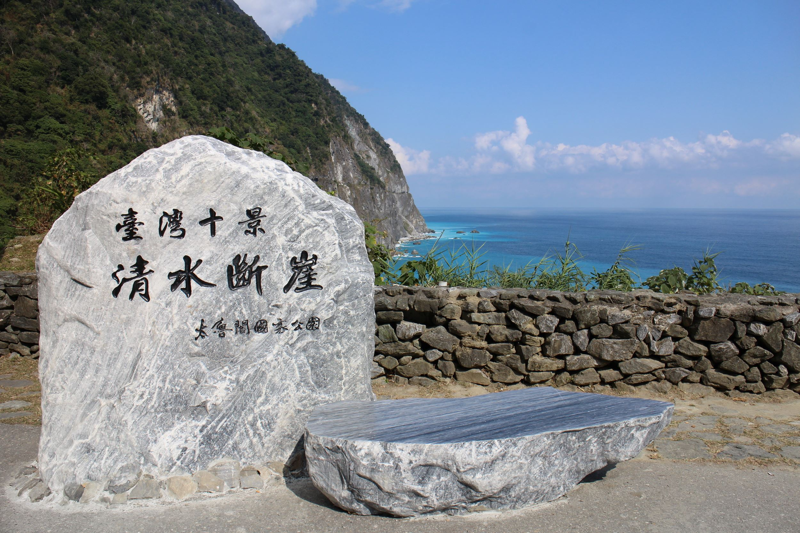
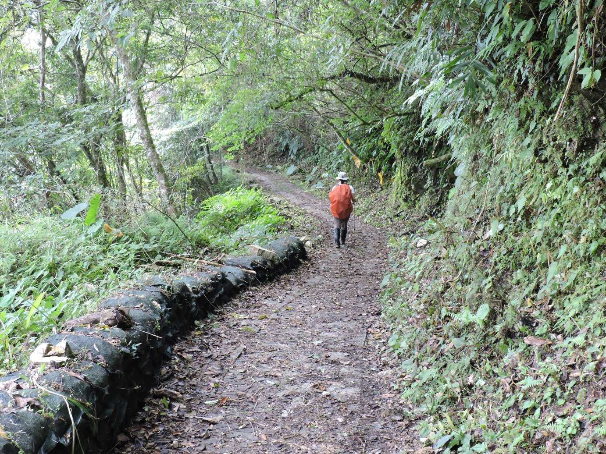
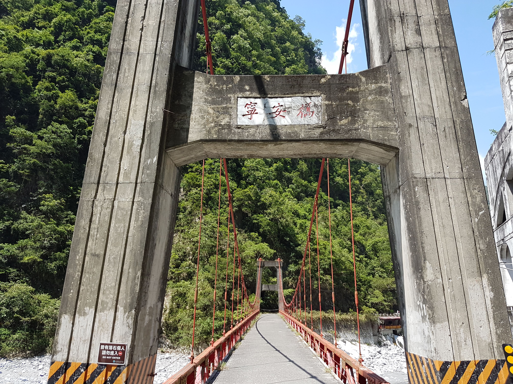

最新消息
| 2021.04.20 | ~道路安全~ | 公路步道開放資訊 |
|---|---|---|
| 2021.04.20 | ~最近活動~ | 當季活動資訊 |
| 2021.04.20 | ~景區舒適度~ | 太魯閣景區觀光舒適度服務專頁 |
| 2021.04.20 | ~道路安全~ | 公路步道開放資訊 |
|---|---|---|
| 2021.04.20 | ~最近活動~ | 當季活動資訊 |
| 2021.04.20 | ~景區舒適度~ | 太魯閣景區觀光舒適度服務專頁 |
 太魯閣臺地位在立霧溪出海口的北岸，立霧溪沖積扇三角洲的頂端，蘇花公路與中橫公路在此交會。
臺地上設置了國家公園管理處行政中心、太魯閣遊客中心、國家公園警察隊及員工宿舍，是國家公園經營管理的樞紐，也是遊客要了解太魯閣國家公園的第一站。
臺地上，除了上述的設施，還設有難易程度不同的步道，供民眾漫步或健行；遊客中心外的大草坪，像是親子的遊戲場，提供家長和孩子開闊自由的活動空間；臺地上遍植各種原生種的綠樹及豐富的生物資源，是遊客散步賞景的好去處，也是學校環境教育及戶外教學的場所。
南段步道鄰近立霧溪，從遊客中心旁大草坪經過遊客中心後方，延伸至太魯閣警察隊為止；沿途可見到立霧溪緩緩由群山中流出，向東注入太平洋。
北段步道則從大型車停車場至行政中心旁，緊靠山邊，穿梭在密林中，除了可享受清涼的森林浴，也可觀賞偶而出現的臺灣獼猴。
太魯閣臺地位在立霧溪出海口的北岸，立霧溪沖積扇三角洲的頂端，蘇花公路與中橫公路在此交會。
臺地上設置了國家公園管理處行政中心、太魯閣遊客中心、國家公園警察隊及員工宿舍，是國家公園經營管理的樞紐，也是遊客要了解太魯閣國家公園的第一站。
臺地上，除了上述的設施，還設有難易程度不同的步道，供民眾漫步或健行；遊客中心外的大草坪，像是親子的遊戲場，提供家長和孩子開闊自由的活動空間；臺地上遍植各種原生種的綠樹及豐富的生物資源，是遊客散步賞景的好去處，也是學校環境教育及戶外教學的場所。
南段步道鄰近立霧溪，從遊客中心旁大草坪經過遊客中心後方，延伸至太魯閣警察隊為止；沿途可見到立霧溪緩緩由群山中流出，向東注入太平洋。
北段步道則從大型車停車場至行政中心旁，緊靠山邊，穿梭在密林中，除了可享受清涼的森林浴，也可觀賞偶而出現的臺灣獼猴。
 清水斷崖位於清水山東側，自蘇花公路和平至崇德之間，綿延21公里 。 其中清水山東南大斷崖尤其險峻，絕壁臨海面長達5公里，非常壯觀。 當行車在山壁斷崖與無垠汪海之間，好像騰雲凌空，上有巨壁千仞，下是汪洋萬頃，真是驚險無比，也感受前人拓荒築路的艱辛，眼前所見正是一篇山海與人的壯麗詩篇。 在這裡還可以欣賞太平洋海天一色，山海對峙，以及海岸呈現多層次的藍色驚艷。 步行於舊道路，看著寧靜的山脈，俯瞰海浪拍打岩石激起的波濤，感受陣陣的海風，宛如置身於一條上不著天，下不著地的空中走廊，令人著迷。 後來臨海舊道多數路段因屬落石頻繁危險區封閉，目前僅規劃開放匯徳景觀道路(步道)，位於匯德隧道北口休憩據點舊道路段，景觀道路開放終端臨海路段徒步區，設有｢臺灣十景—清水斷崖｣石碑及觀景臺，為絕佳清水斷崖眺景點。
 往大禮部落的登山口，在太魯閣台地停車場公廁旁步道起點，經得卡倫步道沿路而上，有階梯 、解說牌示，到大禮步程約3小時。 【大禮部落】 大禮部落位於砂卡礑溪下游左岸上方台地，海拔約915公尺，舊部落名為「赫赫斯」。 目前當地居民種植玉米、高麗菜、四季豆、青椒、箭竹及蕗蕎等農作物。 【大同部落】 由大禮部落，循步道可到大同部落，步程約2.5小時。 部落位於砂卡礑溪中游左岸上方之平台，海拔高度為1128公尺，原始之部落名稱為「砂卡礑」部落，日治時期曾於此地設有駐在所，管理附近之太魯閣族部落。 目前居民種植玉米、青椒、高麗菜、四季豆、甜柿、雪蓮等作物。
 自太魯閣往天祥方向，出中橫公路長春隧道西口，折轉到臺八線舊道，即可看到矗立在立霧溪谷峭崖邊階的長春祠。
為紀念開闢中橫公路殉職人員所建，祠旁湧泉長年流水成散瀑，公路局取名為「長春飛瀑」，成為中橫公路具特殊意義的地標。
長春祠供奉著中橫公路興建工程殉職的225位築路人靈位，唐式風格建築依地勢嵌入山壁間，清新的泉水自山壁湧出，形成一道飛瀑，如同一幅秀麗的國畫圖像。
民國69年長春祠首次坍塌，民國76年峭壁崩坍，落石擊毀祠體及周邊建物設施，於民國85年完成重建，翌年才重新對外開放。
祠後峭壁闢有階梯，循階而上沿途經觀音洞、太魯閣樓、鐘樓、再過一吊橋可至禪光寺，俗稱為「天堂步道」。
自太魯閣往天祥方向，出中橫公路長春隧道西口，折轉到臺八線舊道，即可看到矗立在立霧溪谷峭崖邊階的長春祠。
為紀念開闢中橫公路殉職人員所建，祠旁湧泉長年流水成散瀑，公路局取名為「長春飛瀑」，成為中橫公路具特殊意義的地標。
長春祠供奉著中橫公路興建工程殉職的225位築路人靈位，唐式風格建築依地勢嵌入山壁間，清新的泉水自山壁湧出，形成一道飛瀑，如同一幅秀麗的國畫圖像。
民國69年長春祠首次坍塌，民國76年峭壁崩坍，落石擊毀祠體及周邊建物設施，於民國85年完成重建，翌年才重新對外開放。
祠後峭壁闢有階梯，循階而上沿途經觀音洞、太魯閣樓、鐘樓、再過一吊橋可至禪光寺，俗稱為「天堂步道」。
 由長春祠繼續前行約兩公里，可看到跨越於青山綠水中的鋼構吊橋，這就是寧安舊橋。 長達八十二公尺，是中橫開鑿之初所建，寬度僅容一輛車通過，在當時是台灣最長的單孔橋 朱紅的橋身，在一片綠意中顯得特別醒目。 【不動明王廟】 寧安橋下方岩洞有一座小廟，供奉不動明王，據傳是日治末期，日人開鑿採金道路時，從日本請來銅鑄的不動明王神像在此供奉，庇佑築路工程平安順利，但後來神像不翼而飛，民國40年台電公司重塑神像並整修廟宇。廟中有一道湧泉，清澈而沁涼。 ※因落石擊毀廟體，本區域封閉管制。 【銀帶瀑布】 寧安橋以西不遠處，對岸山凹有一兩段式瀑布，高懸在綠水青山崖壁中，有如白鍊一般，這就是銀帶瀑布。銀帶瀑布從中橫公路就可清楚看到，但它的水量會隨著天氣不同而有所變化。